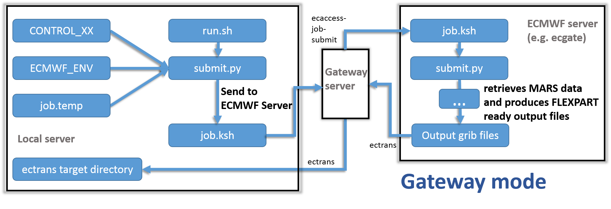
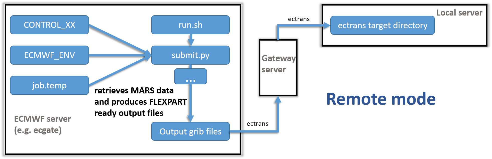
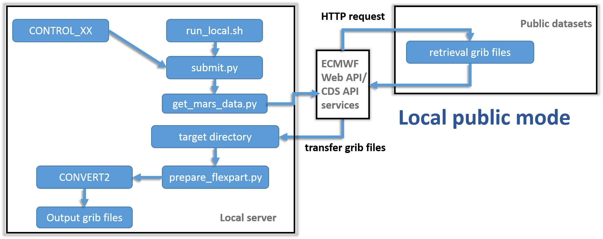

Program flow¶
General program flow¶
The following flow diagram shows the general steps performed by flex_extract.

Overview of the call of the``submit.py`` Python script and raw sequence of work steps in flex_extract.¶
The submit.py Python script is called by the shell script run.sh or run_local.sh and accomplishes the following steps:
- Setup of control data:
Command-line and
CONTROL-file parameters are read, as well as (optionally) the ECMWF user credentials. Depending the Application modes, a job script might be prepared which is then sent to the ECMWF queue.
- Retrieval of data from MARS:
MARS requests are created either on the local machine or on the ECMWF server and then submitted which retrieve the data and store them in GRIB files. If the parameter
REQUESTwas set1, the data are not retrieved and instead a filemars_requests.csvis created, which contains a list of the MARS requests and their settings. IfREQESTis set to2, the csv file is created in addition to retrieving the data. The requests are created in an optimised way by splitting with respect to time, jobs and parameters.
- Post-processing of data to create final
FLEXPARTinput files:After all data have been retrieved, flux fields are disaggregated (see here ) and the vertical velocity is calculated (see here) by the Fortran program
calc_etadot. Finally, the GRIB fields are merged into a single grib file per time step containing all the fields forFLEXPART. Since model-level fields are typically in GRIB2 format, whereas surface-level fields are still in GRIB1 format, they will be converted into GRIB2 if parameterFORMATis set to GRIB2. Please note, however, that older versions of FLEXPART may have difficulties to read these GRIB2 files since some parameter IDs have been change in GRIB2. If the retrieval is executed remotely at ECMWF, the resulting files will be sent to the local gateway server via theECtransutility if the parameterECTRANSis set to1and the parametersGATEWAY,DESTINATIONhave been set properly during installation. The status of the transfer can be checked with the commandecaccess-ectrans-list(on the local gateway server). If the script is executed locally, the progress of the script can be followed with the usual Linux tools.
Workflows of different application modes¶
The following diagrams show how different the program flow is for the different Application modes:

|

|

|

|